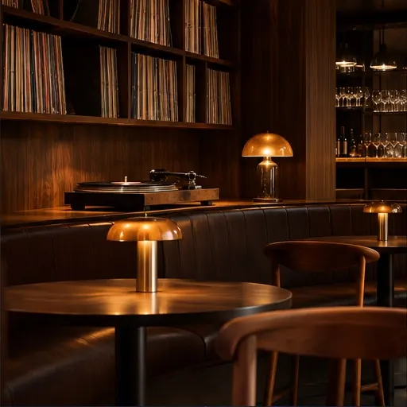

A restored 1974 mastering chain. Records chosen by the room, never by request. If a record sounds wrong here, we do not play it here.
Natural wine and quiet cocktails, built to stay out of the music's way.
Alice Coltrane - Journey in Satchidananda
Pharoah Sanders - Karma
Nala Sinephro - Space 1.8
Records on the shelf
Watts of tube warmth
Images are AI-generated with ChatGPT image generation, not documentary photographs. Motion uses the original local CSS/JavaScript/canvas animation; no Gemini Veo video was used.